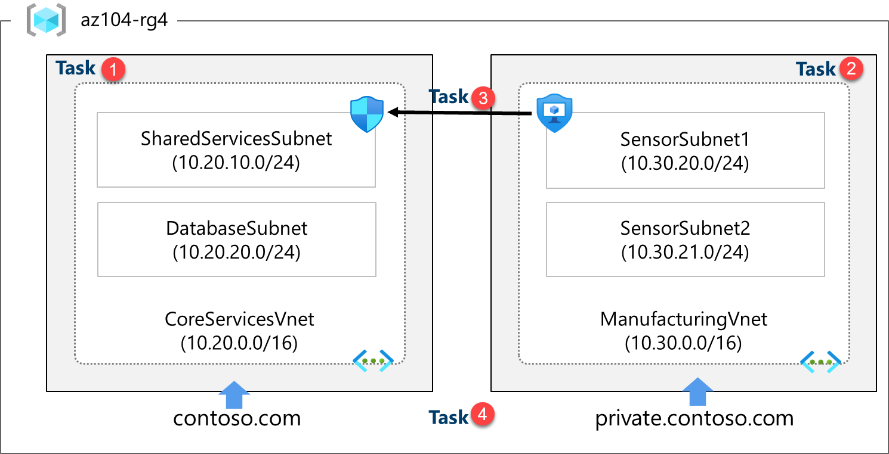

Lab - Implement Virtual Networking
Lab Introduction
This lab is the first of three labs that focuses on virtual networking. In this lab, you learn the basics of virtual networking and subnetting. You learn how to protect your network with network security groups and application security groups. You also learn about DNS zones and records.
This lab requires an Azure subscription. Your subscription type may affect the availability of features in this lab. You may change the region, but the steps are written using East US.
Estimated Time: 50 Minutes
Lab Scenario
Your global organization (i.e. Adamantus Technologies) plans to implement virtual networks. The immediate goal is to accommodate all the existing resources. However, the organization is in a growth phase and wants to ensure there is additional capacity for the growth.
The CoreServicesVnet virtual network has the largest number of resources. A large amount of growth is anticipated, so a large address space is necessary for this virtual network.
The ManufacturingVnet virtual network contains systems for the operations of the manufacturing facilities. The organization is anticipating a large number of internal connected devices for their systems to retrieve data from.
Interactive Lab Simulations
There are several interactive lab simulations that you might find useful for this topic. The simulation lets you to click through a similar scenario at your own pace. There are differences between the interactive simulation and this lab, but many of the core concepts are the same. An Azure subscription is not required.
-
Secure network traffic. Create a virtual machine, a virtual network, and a network security group. Add network security group rules to allow and disallow traffic.
-
Create a simple virtual network. Create a virtual network with two virtual machines. Demonstrate the virtual machines can communicate.
-
Design and implement a virtual network in Azure. Create a resource group and create virtual networks with subnets.
-
Implement virtual networking. Create and configure a virtual network, deploy virtual machines, configure network security groups, and configure Azure DNS.
Architecture Diagram

These virtual networks and subnets are structured in a way that accommodates existing resources yet allows for the projected growth. Let's create these virtual networks and subnets to lay the foundation for our networking infrastructure.
Did you know?: It is a good practice to avoid overlapping IP address ranges to reduce issues and simplify troubleshooting. Overlapping is a concern across the entire network, whether in the cloud or on-premises. Many organizations design an enterprise-wide IP addressing scheme to avoid overlapping and plan for future growth.
Job Skills
- Task 1: Create a virtual network with subnets using the portal.
- Task 2: Create a virtual network and subnets using a template.
- Task 3: Create and configure communication between an Application Security Group and a Network Security Group.
- Task 4: Configure public and private Azure DNS zones.
Task 1: Create a Virtual Network with Subnets using the Portal
The organization plans a large amount of growth for core services. In this task, you create the virtual network and the associated subnets to accommodate the existing resources and planned growth. In this task, you will use the Azure portal.
-
Sign in to the Azure portal -
https://portal.azure.com. -
Search for and select
Virtual Networks. -
Select Create on the Virtual networks page.
-
Complete the Basics tab for the CoreServicesVnet.
Option Value Resource Group az104-rg4(if necessary, create new)Name CoreServicesVnetRegion (US) East US -
Move to the IP Addresses tab.
Option Value IPv4 address space Replace the prepopulated IPv4 address space with 10.20.0.0/16(separate the entries) -
Select + Add a subnet. Complete the name and address information for each subnet. Be sure to select Add for each new subnet. Be sure to delete the default subnet - either before or after creating the other subnets.
Subnet Option Value SharedServicesSubnet Subnet name SharedServicesSubnetStarting address 10.20.10.0Size /24DatabaseSubnet Subnet name DatabaseSubnetStarting address 10.20.20.0Size /24Note: Every virtual network must have at least one subnet. Reminder that five IP addresses will always be reserved, so consider that in your planning.
-
To finish creating the CoreServicesVnet and its associated subnets, select Review + create.
-
Verify your configuration passed validation, and then select Create.
-
Wait for the virtual network to deploy and then select Go to resource.
-
Take a minute to verify the Address space and the Subnets. Notice your other choices in the Settings blade.
-
In the Automation section, select Export template, and then wait for the template to be generated.
-
Download the template.
-
Navigate on the local machine to the Downloads folder and Extract all the files in the downloaded zip file.
-
Before proceeding, ensure you have the template.json file. You will use this template to create the ManufacturingVnet in the next task.
Task 2: Create a Virtual Network and Subnets using a Template
In this task, you create the ManufacturingVnet virtual network and associated subnets. The organization anticipates growth for the manufacturing offices so the subnets are sized for the expected growth. For this task, you use a template to create the resources.
-
Locate the template.json file exported in the previous task. It should be in your Downloads folder.
-
Edit the file using the editor of your choice. Many editors have a change all occurrences feature. If you are using Visual Studio Code be sure you are working in a trusted window and not in the restricted mode. Consult the architecture diagram to verify the details.
Make changes for the ManufacturingVnet Virtual Network
-
Replace all occurrences of CoreServicesVnet with
ManufacturingVnet. -
Replace all occurrences of 10.20.0.0 with
10.30.0.0.
Make changes for the ManufacturingVnet Subnets
-
Change all occurrences of SharedServicesSubnet to
SensorSubnet1. -
Change all occurrences of 10.20.10.0/24 to
10.30.20.0/24. -
Change all occurrences of DatabaseSubnet to
SensorSubnet2. -
Change all occurrences of 10.20.20.0/24 to
10.30.21.0/24. -
Read back through the file and ensure everything looks correct. Use the architecture diagram for resource names and IP addresses.
-
Be sure to Save your changes.
Note: There is a completed template files in the lab files directory.
Make changes to the Parameters File
-
Locate the parameters.json file exported in the previous task. It should be in your Downloads folder.
-
Edit the file using the editor of your choice.
-
Replace the one occurrence of CoreServicesVnet with
ManufacturingVnet. -
Save your changes.
Deploy the Custom Template
-
In the portal, search for and select
Deploy a custom template. -
Select Build your own template in the editor and then Load file.
-
Select the templates.json file with your Manufacturing changes, then select Save.
-
Select Edit template, and then Load file.
-
Select the parameters.json file with your Manufacturing changes, then select Save.
-
Ensure your resource group, az104-rg4 is selected.
-
Select Review + create and then Create.
-
Wait for the template to deploy, then confirm (in the portal) the Manufacturing virtual network and subnets were created.
Note: If you have to deploy more than one time you may find some resources were successfully completed and the deployment is failing. You can manually remove those resources and try again.
Task 3: Create and Configure Communication between an Application Security Group and a Network Security Group
In this task, we create an Application Security Group and a Network Security Group. The NSG will have an inbound security rule that allows traffic from the ASG. The NSG will also have an outbound rule that denies access to the internet.
Create the Application Security Group (ASG)
-
In the Azure portal, search for and select
Application security groups. -
Click Create and provide the basic information.
Setting Value Subscription your subscription Resource group az104-rg4 Name asg-webRegion East US -
Click Review + create and then after the validation click Create.
Note: At this point, you would associate the ASG with virtual machine(s). These machines will be affected by the inbound NSG rule you create in the next task.
Create the Network Security Group and Associate it with CoreServicesVnet
-
In the Azure portal, search for and select
Network security groups. -
Select + Create and provide information on the Basics tab.
Setting Value Subscription your subscription Resource group az104-rg4 Name myNSGSecureRegion East US -
Click Review + create and then after the validation click Create.
-
After the NSG is deployed, click Go to resource.
-
Under Settings click Subnets and then Associate.
Setting Value Virtual network CoreServicesVnet (az104-rg4) Subnet SharedServicesSubnet -
Click OK to save the association.
Configure an Inbound Security Rule to Allow ASG Traffic
-
Continue working with your NSG. In the Settings area, select Inbound security rules.
-
Review the default inbound rules. Notice that only other virtual networks and load balancers are allowed access.
-
Select + Add.
-
On the Add inbound security rule blade, use the following information to add an inbound port rule. This rule allows ASG traffic. When you are finished, select Add.
Setting Value Source Application security group Source application security groups asg-web Source port ranges * Destination Any Service Custom (notice your other choices) Destination port ranges 80,443 Protocol TCP Action Allow Priority 100 Name AllowASG
Configure an Outbound NSG Rule that denies Internet Access
-
After creating your inbound NSG rule, select Outbound security rules.
-
Notice the AllowInternetOutboundRule rule. Also notice the rule cannot be deleted and the priority is 65001.
-
Select + Add and then configure an outbound rule that denies access to the internet. When you are finished, select Add.
Setting Value Source Any Source port ranges * Destination Service tag Destination service tag Internet Service Custom Destination port ranges 8080 Protocol Any Action Deny Priority 4096 Name DenyAnyCustom8080Outbound
Task 4: Configure Public and Private Azure DNS Zones
In this task, you will create and configure public and private DNS zones.
Configure a Public DNS Zone
You can configure Azure DNS to resolve host names in your public domain. For example, if you purchased the contoso.xyz domain name from a domain name registrar, you can configure Azure DNS to host the contoso.com domain and resolve www.contoso.xyz to the IP address of your web server or web app.
-
In the portal, search for and select
DNS zones. -
Select + Create.
-
Configure the Basics tab.
Property Value Subscription Select your subscription Resource group az-104-rg4 Name contoso.com(if reserved adjust the name)Region East US (review the informational icon) -
Select Review create and then Create.
-
Wait for the DNS zone to deploy and then select Go to resource.
-
On the Overview blade notice the names of the four Azure DNS name servers assigned to the zone. Copy one of the name server addresses. You will need it in a future step.
-
Select + Record set. Add a virtual network link record for each virtual network that needs private name-resolution support.
Property Value Name www Type A TTL 1 IP address 10.1.1.4
Note: In a real-world scenario, you'd enter the public IP address of your web server.
-
Select OK and verify your domain has an A record set named www.
-
Open a command prompt, and run the following command. If you have changed the domain name, make an adjustment.
sh
nslookup www.contoso.com <name server name>
1. Verify the host name www.contoso.com resolves to the IP address you provided. This confirms name resolution is working correctly.
Configure a Private DNS Zone
A private DNS zone provides name resolution services within virtual networks. A private DNS zone is only accessible from the virtual networks that it is linked to and can't be accessed from the internet.
-
In the portal, search for and select
Private dns zones. -
Select + Create.
-
On the Basics tab of Create private DNS zone, enter the information as listed in the table below:
Property Value Subscription Select your subscription Resource group az-104-rg4 Name private.contoso.com(adjust if you had to rename)Region East US -
Select Review create and then Create.
-
Wait for the DNS zone to deploy and then select Go to resource.
-
Notice on the Overview blade there are no name server records.
-
Select DNS Management and then select Virtual network links. Configure the link.
Property Value Link name manufacturing-linkVirtual network ManufacturingVnet -
Select Create and wait for the link to create.
-
From the DNS Management blade select + Recordsets. You would now add a record for each virtual machine that needs private name-resolution support.
Property Value Name sensorvm Type A TTL 1 IP address 10.1.1.4
Note: In a real-world scenario, you'd enter the IP address for a specific manufacturing virtual machine.
Cleanup your Resources
If you are working with your own subscription take a minute to delete the lab resources. This will ensure resources are freed up and cost is minimized. The easiest way to delete the lab resources is to delete the lab resource group.
- In the Azure portal, select the resource group, select Delete the resource group, Enter resource group name, and then click Delete.
- Using Azure PowerShell,
Remove-AzResourceGroup -Name resourceGroupName. - Using the CLI,
az group delete --name resourceGroupName.
Key Takeaways
Congratulations on completing the lab. Here are the main takeaways for this lab.
- A virtual network is a representation of your own network in the cloud.
- When designing virtual networks it is a good practice to avoid overlapping IP address ranges. This will reduce issues and simplify troubleshooting.
- A subnet is a range of IP addresses in the virtual network. You can divide a virtual network into multiple subnets for organization and security.
- A network security group contains security rules that allow or deny network traffic. There are default incoming and outgoing rules which you can customize to your needs.
- Application security groups are used to protect groups of servers with a common function, such as web servers or database servers.
- Azure DNS is a hosting service for DNS domains that provides name resolution. You can configure Azure DNS to resolve host names in your public domain. You can also use private DNS zones to assign DNS names to virtual machines (VMs) in your Azure virtual networks.
Address: H-34, Ground Floor, Sector 63, Noida, Uttar Pradesh
Email: info@ceekh.com